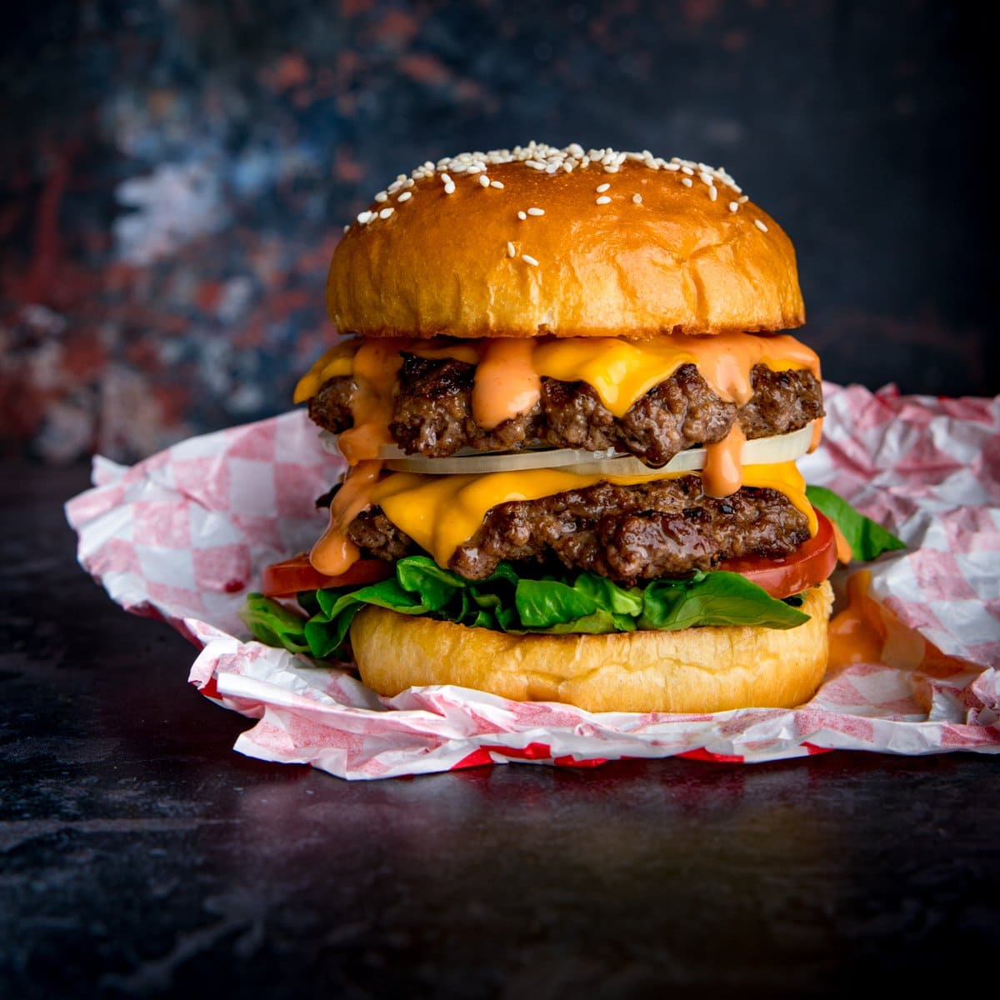

Ingredients
- 20% Fat, 80% Lean Beef
- Salt
- Pepper
Steps
- Take the minced beef out of the refrigerator an hour before you want to use it. Like steak, it's better to have minced beef that's closer to room temperature, rather than very cold. This will ensure the inside of the burger is hot at the same time the outside is cooked.
- Form the minced beef into balls and squash flat into patties.
- Sprinkle on salt and pepper right before cooking the burgers. Salt can draw out moisture from the meat and we want to keep that moisture in.
- Place the burgers on a hot griddle that's been brushed with oil, and cook for about 3 minutes, until browned.
- Turn the burgers over and place a slice of cheese on top. Cook for a further 1-3 minutes, until browned on the second side, then remove from the griddle and allow to rest for a couple of minutes.
- Stack the burgers up on toasted brioche buns with lettuce, tomato, onions and burger sauce and serve.
Back to recipes page